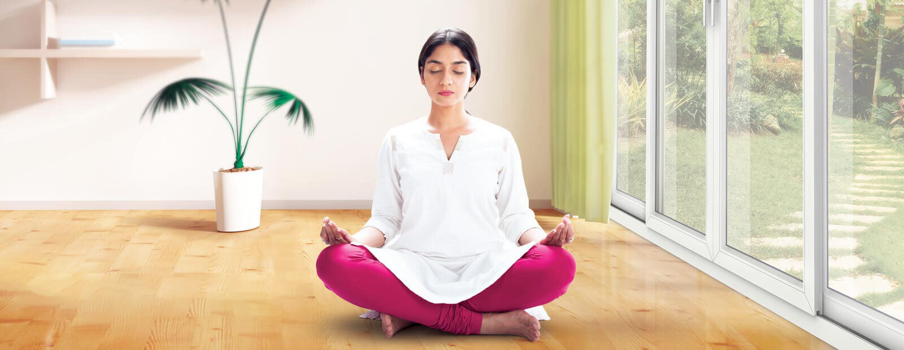

IZOLIMI I ZËRIT
Produktet LIDERPLAST ju mundësojnë të jetoni në qetësi ditët tuaja. Nëse jeni lodhur nga zhurmat e përditëshme të: automjeteve, aerporteve, dhe zhurmave të tjera të cilat depërtojnë nëpër muret tuaja, dritaret me aftësi izoluese të zërit deri në 50db janë zgjedhje e duhur.Profilet e dritareve te PVC-se me mbrojtje të lartë zhurme kanë një peshë të madhe që duhet të përballohet nga struktura e kornizës së dritareve. Instalimi korrekt kërkon vetitë statike adekuate, stabilitetin dhe forcën tërheqëse. Dritaret sipas aftësisë izoluese të zërit (zhurmës) veçohen si në tabelën e dhënë më poshtë. Dritaret e plastikës i takojnë grupit të kategorisë të parë, kurse ato të aluminit me urë përçuese i takojnë kategorisë të dytë ose të tretë.
Njëri nder faktorët kryesor për një ambient të bredshëm pa zhurma, është xhami i dritares. LIDERPLAST ju ofron gamë të gjërë të kombinimeve të ndryshme të xhamit. Për xhamin standard dopio 24mm izolimi arrin deri në 32dB. Një zgjedhje e mirë për zhurmën e padëshirushme është dritarja LIDERPLAST Triple (i trefishtë) i cili arrin në parametrat e izolimit 34 deri në 41 db. Për izolim më të mirë të zhurmës luan rol edhe gomina e tretë te profili, si dhe kombinimi i trashësive të xhamit bashkë me mënyrën e montimit të dritares.